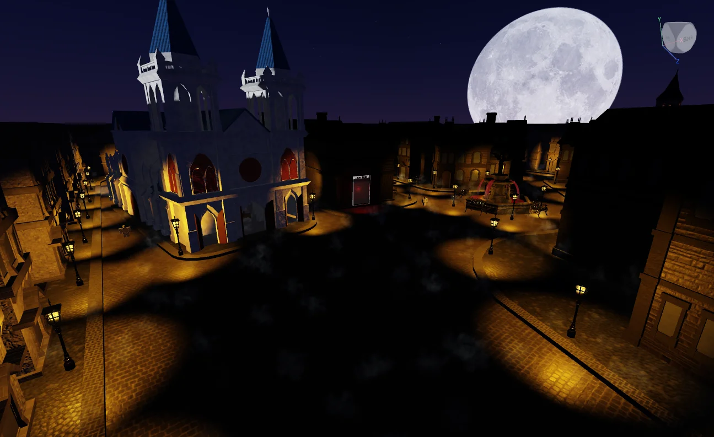
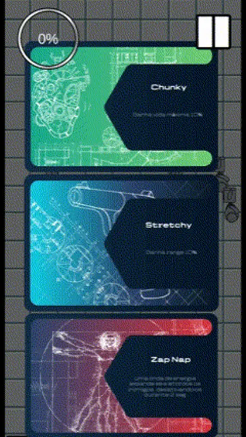
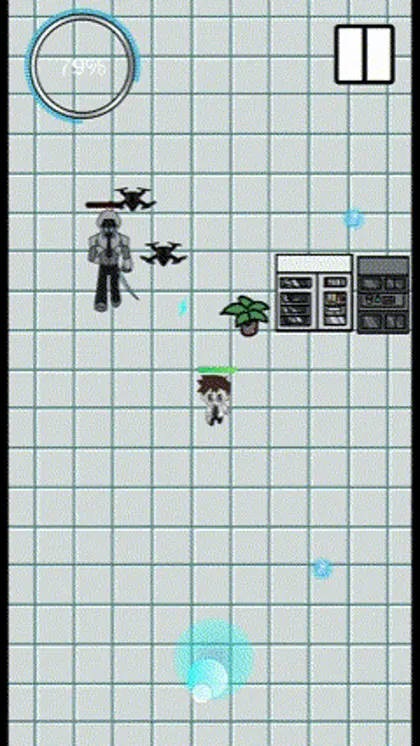
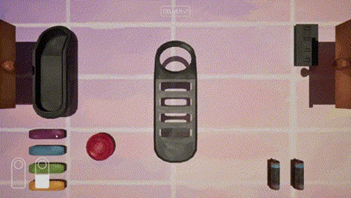
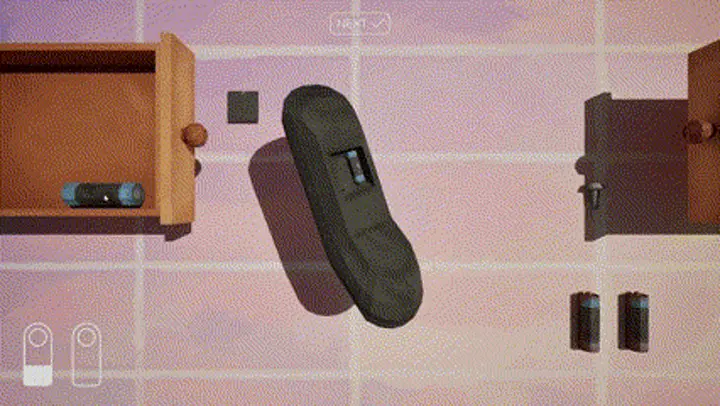

01 / 04
Roblox / Luau / Multiplayer combat
Gameplay programmer
Portugal · Open to opportunities

I build systems that feel good to play.
01 / Portfolio
Different worlds. Shared attention to the systems that bring them to life.
Roblox / Luau / Multiplayer combat
Unity / C# / Action roguelike


Character, weapon and gadget upgrades.
Twenty waves. Controlled enemy spawning.
Unreal Engine / Blueprints / Puzzle


Small interactions. A satisfying whole.
Unity / C# / Space exploration
Lost signal. New horizons.
02 / About
The person behind the systems
I'm Marco, a gameplay programmer who likes knowing what makes a game feel right.
I recently graduated in Videogames and Multimedia Design at Universidade Lusófona in Porto. Now I'm looking for a team where I can contribute, keep learning and build thoughtful play experiences.
I spend my time deconstructing games and building systems of my own. My work ranges from responsive multiplayer combat to progression systems and the small interactions that make something satisfying to play.
03 / Skills & tools
Shown through the work
Different engines. The same attention to how a system behaves in a player's hands.
04 / Curriculum vitae
Education, projects and technical skills.
A closer look at my background.
Marco Santos / Gameplay programmer
05 / Contact
Open to opportunities
Looking for a gameplay programmer?
I'd like to hear what you're working on.